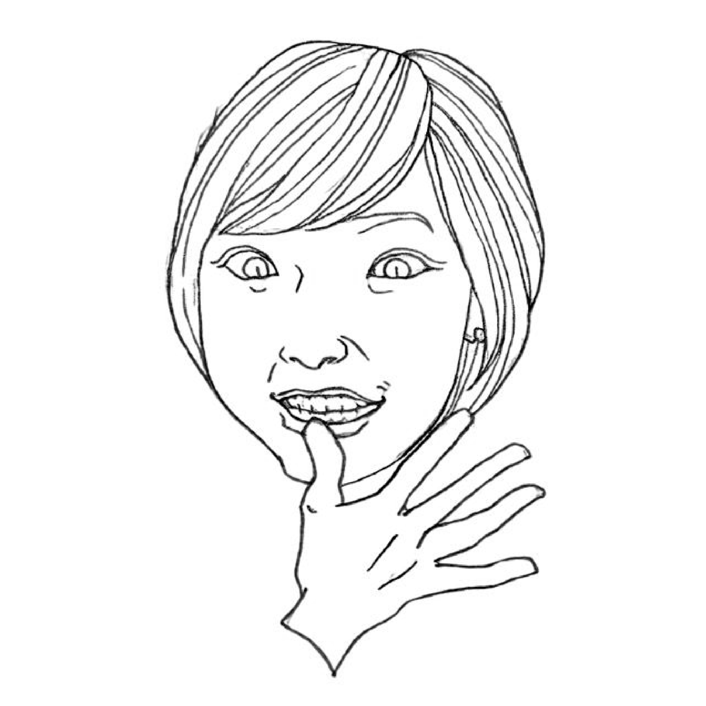
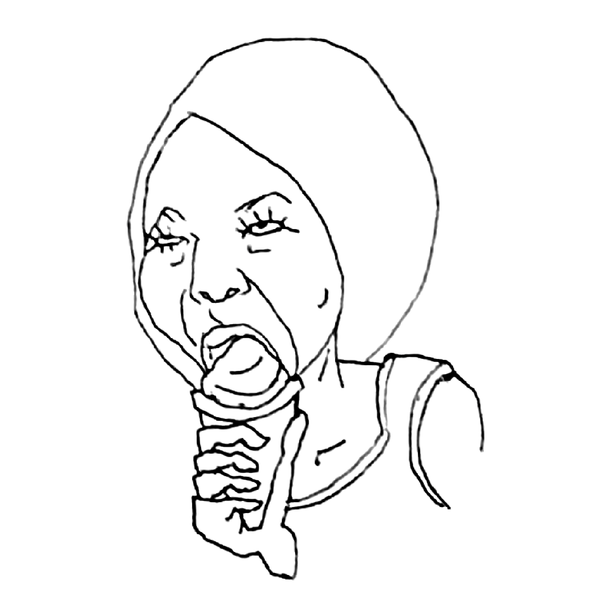

自己紹介
はじめまして、GUsSO(グッソ)と申します。
似顔絵を描くのが好きで、色んなタッチであらゆる「好きな人」を描いています。
ここでは趣味で描いた似顔絵とはなまえを紹介しています。

にがおえだな・・・？
タイトルの「にがおえだな」は最初、図書館にしようとしたけど「図書館はジャンルが多いな、お家の本棚ぐらいの規模がいいぐらいだな」と思って、好みが偏りがちな本棚からのインスパイアで「にがおえだな」にしてみました。

すき
沖縄のファストフード店Jefが好きすぎてフォトウェディングをJefで撮ったほど。
チョコミントが好きで夏はコンビニはしごします。
実家の琉球犬2頭がかわいくて好きです。白とぅらと茶とぅらの女の子。
ショートヘア歴が長すぎて誰よりもショートヘアが似合うと自負してます。
夫がなんだかんだ好き。

地元の活動
地元の音訳ボランティアサークルに入って活動中。
視覚障碍者の方を対象に、地域の広報誌を読んで録音したCDを利用者さんに郵送して情報取得のために活用していただいています。